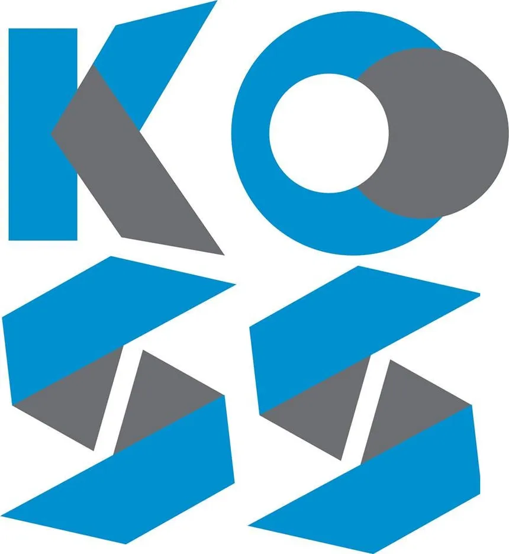
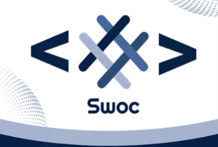
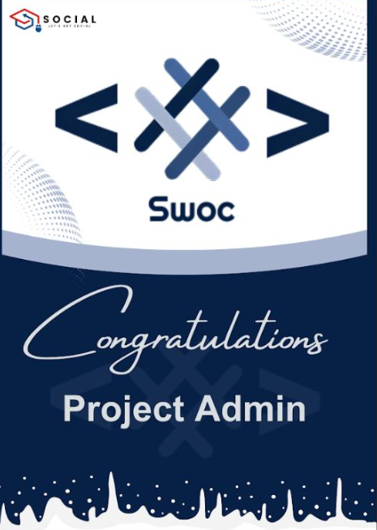
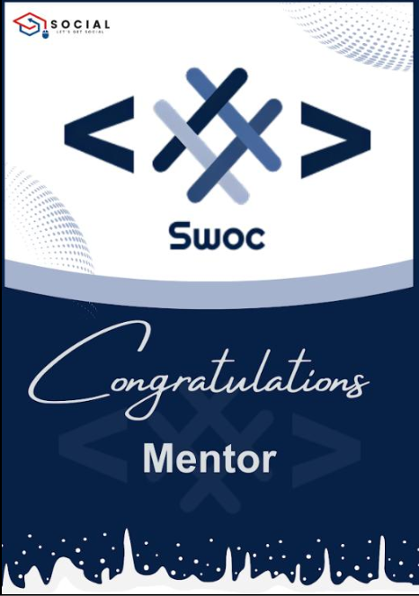
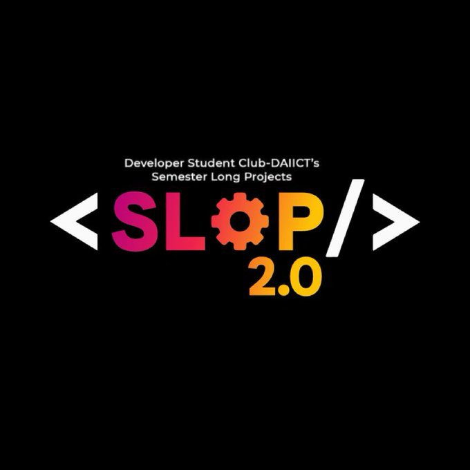
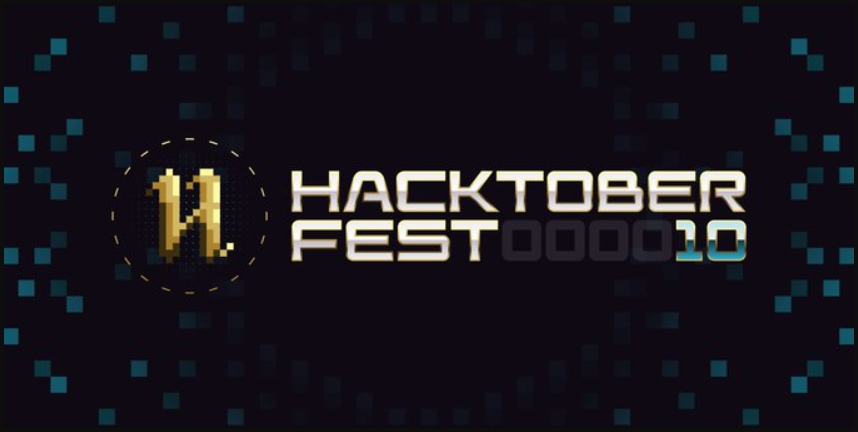
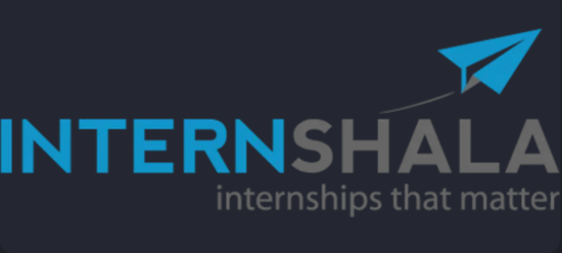
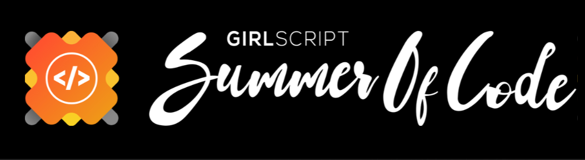
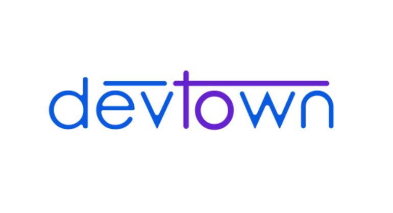

Developed essential skills in event planning, marketing, leadership, communication, and mentorship through
activeparticipation in the GDSC program.
Strengthened team building and leadership abilities by spearheading engaging workshops and projects.
Established a thriving community of over 620+ students, fostering collaboration, and learning.

KWoc'23
Selected as Mentor: Successfully chosen as a mentor for Kharagpur Winter of Code.
Appointed as a mentor under the banner of DevLabs, showcasing recognition and trust from an esteemed organization in the tech industry.

Swoc'23
Campus Ambassador: Appointed as a Campus Ambassador for Social Winter of Code.
Organized Bootcamps: Successfully coordinated and conducted informative bootcamps, enlightening participants about open source principles, fostering a collaborative coding culture.

Swoc'23
Mentor Selection: Recognized and selected as a mentor for Social Winter of Code, demonstrating expertise and commitment to guiding participants in meaningful open source projects.
Commitment to Open Source: Acknowledged for a strong commitment to the principles of open source development, playing a key role in nurturing the next generation of contributors and fostering a collaborative coding community.

SWoc'23
Project Admin Selection: Successfully appointed as a Project Admin for Social Winter of Code, showcasing leadership skills and a commitment to overseeing and coordinating project-related activities.
Mentor Coordination: Played a key role in coordinating and collaborating with mentors to ensure a smooth and productive mentoring process for participants, contributing to the overall success of the Social Winter of Code program.
24 Request
Contributor Recognition: Acknowledged as a contributor to Mozilla Firefox by successfully working on 24 pull requests, demonstrating a consistent and impactful commitment to the improvement of the browser's user interface.
Continuous Contribution: Demonstrated a sustained dedication to open source development by consistently engaging with Mozilla Firefox projects, contributing code, and actively participating in the collaborative improvement of one of the world's leading web browsers.
OpenCode'23
Contributor Selection: Successfully selected as a contributor for Opencode23, highlighting expertise and commitment to actively participate in open source projects.
Project Involvement: Actively engaged in contributing to Opencode23 projects, demonstrating a hands-on approach to problem-solving and collaborating with the open-source community.

Slop 3.0
Mentored and guided over 30 active contributors within a thriving open-source community.
● Successfully managed a GitHub repository with 55+ forks 50+ Pull requests 30+ stars, demonstrating the project's impact.
● Actively participated in Hacktoberfest, encouraging open-source contributions and community growth

Hacktoberfest'23
Maintainer Role: Serving as a maintainer for Hacktoberfest, overseeing and managing the open-source contributions, showcasing leadership and organizational skills in handling the influx of pull requests.
Extensive Contributions: Accepted and reviewed over 50 pull requests from contributors during Hacktoberfest, reflecting a commitment to fostering a collaborative environment and encouraging active participation.
Issue Management: Raised and managed 65+ relevant and impactful issues, providing contributors with clear guidance and opportunities for meaningful engagement in the open-source community.
Hacktoberfest'23
Contributor Recognition: Successfully selected as a contributor at Hacktoberfest23, demonstrating active participation and meaningful contributions to open-source projects during the event.
Completion Achievement: Accomplished the goals set during Hacktoberfest23, contributing to the success of the event and showcasing dedication to the open-source community.
Environmental Impact: Honored with a name tree plantation in Tanzania as a recognition for contributions, symbolizing a positive impact not only in the digital realm but also in environmental conservation efforts.
Hacksquade
Contributor Selection: Successfully chosen as a contributor at Hacksquad, showcasing expertise and commitment to contribute actively to open-source initiatives.
Team Building: Established and led a team within Hacksquad, demonstrating leadership skills in coordinating efforts and fostering collaboration among team members.
letsGrowMore
Internship Experience: Completed a comprehensive internship at LetGrowMore as a web developer, gaining hands-on experience in various aspects of web development.
Internship Experience: Completed a comprehensive internship at LetGrowMore as a web developer, gaining hands-on experience in various aspects of web development.

Internshala
Internshala Student Partner Selection: Successfully selected as an Internshala Student Partner, demonstrating leadership qualities, communication skills, and a commitment to promoting opportunities for fellow students.
Contribution to Student Growth: Played a vital role in contributing to the professional growth and development of peers by facilitating awareness about internships, workshops, and other educational resources provided by Internshala.

Gssoc'23
Selected as Contributor:Created over 100 high-quality pull requests, showcasing strong coding and collaboration skills within diverse projects.
● Generated and managed more than 330 issues, fostering proactive communication and problem-solving within
theopen-source community
● Forked and contributed to 70+ repositories, displaying an eagerness to learn, adapt, and work across a wide range
of codebases

devTown
Campus Ambassador Selection: Successfully chosen as a Campus Ambassador at DevTown, showcasing leadership skills, communication abilities, and a strong connection with the student community.
Building Community Connections: Established and nurtured connections with students, creating a vibrant community within the campus, and contributing to the growth and visibility of DevTown.
FOSSASIA
Contributor Recognition: Successfully selected as a contributor for FOSSASIA, showcasing skills and dedication to contributing actively to open-source projects within the FOSSASIA community.
Open Source Contributions: Actively engaged in contributing code, documentation, or other valuable assets to FOSSASIA projects, demonstrating a commitment to the principles of open source development.